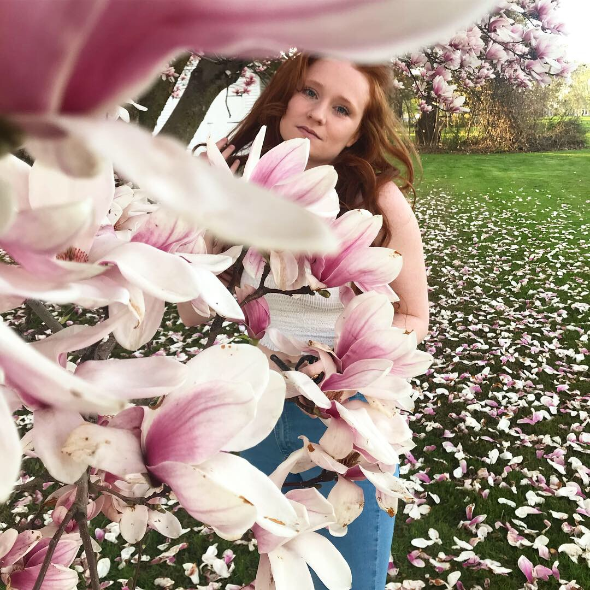

About Me
My name is Jacqueline Doucette, and I use she/her pronouns. I am a University of Massachusetts Amherst alum. I graduated with a BA in English and a double major of Fashion Design and Merchandising from the BDIC program, along with a Certificate in Professional Writing and Technical Communication. I have experience with MadCap Flare, Adobe InDesign and Photoshop, and HTML and CSS coding. I love to paint and draw. My favorite mediums to work with are charcoal and watercolors. I also love to read and write, especially poetry. I flourish when in a creative enviornment!
Come take a look at my art!